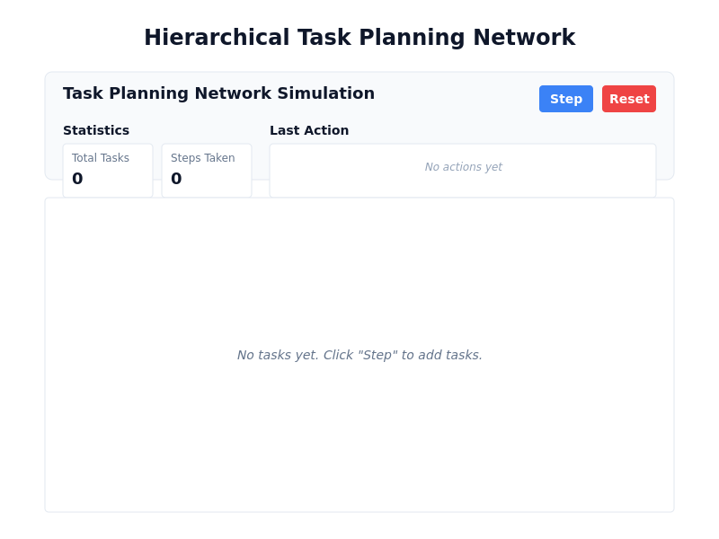
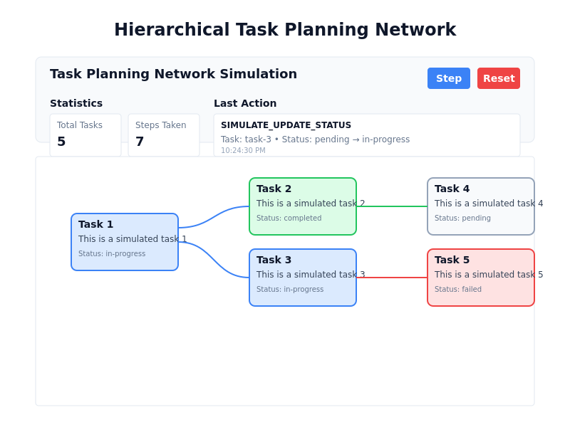

Project Overview
This project demonstrates a hierarchical task planning network visualization using React Flow and Redux Toolkit (RTK). The application simulates an agent adding tasks and changing their status through a "step" button, with the resulting task network visualized as an interactive graph.
Application Screenshots
Initial State
The application starts with an empty task network and statistics showing zero tasks and steps.
After Several Steps
After clicking the step button several times, the application shows a hierarchical task network with various task statuses and relationships.
Key Features
Utilizes React Flow for interactive graph visualization with custom node types and edge configurations.
Implements RTK for efficient state management with actions for adding tasks, updating status, and simulating agent steps.
Tasks are positioned based on their depth in the hierarchy and sibling index, creating a clear visual representation of task relationships.
Tasks are styled based on their status (pending, in-progress, completed, failed) with appropriate colors and animations.
The "Step" button simulates an agent adding tasks or changing task statuses, demonstrating how a planning agent might operate.
Users can directly interact with task nodes to change their status or reset the entire simulation.
Technical Implementation
Task State Model
{
tasks: [
{
id: 'task-1',
title: 'Task 1',
description: 'This is a simulated task 1',
status: 'pending' | 'in-progress' | 'completed' | 'failed',
parentId: null | 'task-id',
children: ['task-id', ...],
createdAt: '2025-04-25T22:15:00.000Z',
updatedAt: '2025-04-25T22:16:00.000Z'
},
// ...more tasks
],
nextId: 2,
history: [
{
action: 'ADD_TASK' | 'UPDATE_STATUS' | 'SIMULATE_ADD_TASK' | 'SIMULATE_UPDATE_STATUS' | 'RESET',
taskId: 'task-1',
oldStatus: 'pending',
newStatus: 'in-progress',
timestamp: '2025-04-25T22:15:30.000Z'
},
// ...more history entries
]
}Getting Started
To run this application locally:
- Clone the repository
- Install dependencies with
pnpm install - Start the development server with
pnpm run dev - Open
http://localhost:5173in your browser